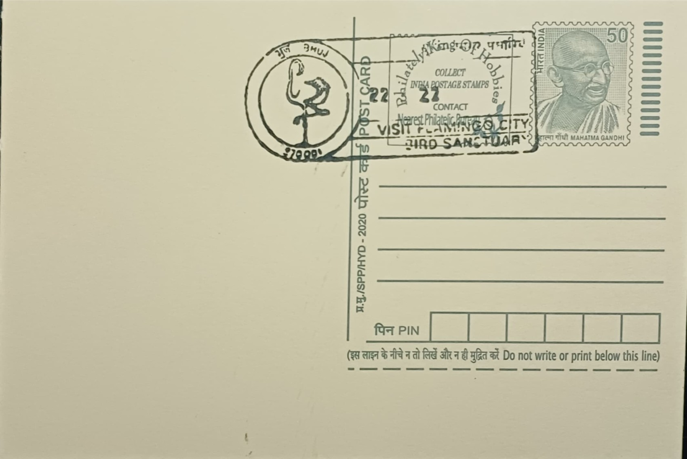

Visit Flamingo City, Bird Sanctuary
ફ્લેમિંગો સિટી, પક્ષી અભયારણ્યની મુલાકાત લો


The name "Flamingo City" was coined for a cluster of raised mud mounds deep in the Great Rann of Kutch, built season after season by nesting greater flamingos into forms resembling a miniature skyline of turrets when viewed from the air, which gave the site its evocative title long before it became a conservation landmark. The breeding colony was first scientifically confirmed in the early twentieth century, with Maharao Khengarji of Kutch among the earliest to document the birds nesting here, and ornithologist Salim Ali later estimating the congregation at several hundred thousand birds in the 1940s. A further major breeding event was recorded in January 1974, when a colony of a few thousand birds was found nesting beside the mounds, cementing the site's identity in modern ornithological literature.
Flamingo City is recognised as the only regular breeding ground for flamingos in India and one of the largest such colonies in Asia, hosting both the greater flamingo (Phoenicopterus roseus) and the lesser flamingo (Phoeniconaias minor). Its significance lies in the rarity of inland flamingo breeding worldwide, since the species typically nests in remote, undisturbed saline flats where predators cannot easily reach the eggs and chicks; the Rann's seasonal mudflats provide exactly this combination of isolation and shallow brackish water. The site forms the ecological centrepiece of the Kutch Desert Wildlife Sanctuary, drawing researchers, birdwatchers and conservation agencies and anchoring Gujarat's broader reputation as a destination for wetland and desert biodiversity.
The colony lies within the Great Rann near Pachchham Island, on mudflats that flood with a mix of monsoon rainwater and seawater ingress, creating the shallow saline pools in which flamingos construct their nest mounds from mud and silt; nesting occurs only when water levels and salinity reach conditions the birds find suitable, which makes breeding events irregular from year to year. The surrounding sanctuary was formally notified in February 1986, consolidating protection over roughly 7,506 square kilometres of the Rann, making it one of the largest wildlife sanctuaries in India by area. The flamingos feed on blue-green algae and small crustaceans such as Artemia that proliferate in the saline shallows, a diet that also gives the adult birds their characteristic pink colouration.
Access to the breeding grounds themselves is tightly restricted, since the mudflats are fragile and disturbance can cause birds to abandon nests mid-season, so most visitors and researchers observe the colony from a distance or through monitored forest department routes rather than entering the core area. The unpredictability of breeding, tied closely to rainfall and tidal ingress in a given year, has made long-term monitoring difficult, and gaps of several years without confirmed nesting have been recorded between major breeding events, adding to the scientific interest each time a new colony is documented. The surrounding Rann also hosts other bird concentrations, including pelicans, cranes and black-necked storks, reinforcing the area's standing as a wetland complex of wider importance beyond the flamingos alone.
Today the site is administered as part of the Kutch Desert Wildlife Sanctuary under Gujarat's forest department, with periodic aerial and ground surveys conducted to estimate nesting numbers whenever conditions permit breeding, and the neighbouring Narayan Sarovar Wildlife Sanctuary, notified in 1981 and covering about 444 square kilometres, adds a second protected zone supporting overlapping bird populations in the district. Eco-tourism built around the Rann, including organised tours timed to flamingo activity and the wider Rann Utsav festival circuit, has turned the sanctuary into one of Kachchh's notable nature-based attractions alongside its salt desert scenery. The combination of strict protection and seasonal public interest has kept Flamingo City functioning both as an active breeding ground for forest officials to monitor and as a recognisable name on Gujarat's wildlife tourism map.
| Date of Introduction | July 16, 1984 |
|---|---|
| Address | Senior Postmaster, |
| Bhuj HO, | |
| Kachchh (dt.), Gujarat - 370001. |